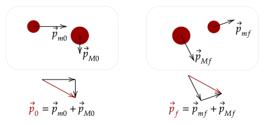
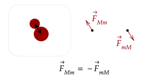
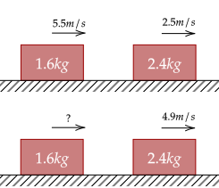

We noted from the momentum-impulse theorem that a net force which causes a net impulse causes a change in impulse. However, what happens when there is no net force?
This means that if there is no net force, then there is no change in momentum. In other words, momentum is conserved if there is no net force acting on an object. We can generalize this to more objects in a system.
Question 1
(HRK Q6.1) Justify the following statement. "The law of conservation of linear momentum, as applied to a single particle, is equivalent to Newton's first law of motion."
Answer
This makes sense. If there is only one particle, there are no other particles for it to interact with; thus, we only care about the net force on the particle. If it is zero, then there is no change in velocity, which is identical to Newton's first law.
For example, for two objects, they each have net forces on each other. If we set these as zero, then their momentum is conserved. Below, we note two objects which we will call and .

We see here that the total momentum of the two objects in our system is constant before and after collision. We can say this because in our system above, there are no net forces, so no change in momentum occurs.
However, how about the force that happens on collision? Well, by Newton's third law, the force acting on and to an object have the same magnitude but opposite directions.

We will use the momentum definition of the net force.
This basically means that "the rate of change of the
Thus, we have shown that before, during, and after a collision, the total momentum in a system is conserved.
Question 2
(HRK Q6.10) Explain how conservation of momentum applies to a handball bouncing off a wall.
Answer
The collision here is inbetween the wall and the handball. When thrown against the wall, the handball exerts a force on the wall, and the wall exerts a force on the handball, causing it to rebound. However, this force against the wall causes it to change its momentum as well, however this change is imperceptible.
The change in the momentum of the handball (rebound) and the imperceptible change of momentum of the wall, when added together as a single system, will be constant.
Question 3
(LSM CQ9.10) Can objects in a system have momentum while the momentum of the system is zero? Explain your answer.
Answer
Yes. Imagine two objects with the same mass moving at the same speed but moving towards each other. The momentum vectors here, when added together, will become zero.
Now, we will solve problems with one constraint: we only deal with problems in one-dimension, like we did in kinematics. We lift this constraint in the next tutorial.
For two objects, mathematically, we can write out the law of conservation of momentum like so. We will use the two objects above, with masses and .
Exercise 1a
(HRK E6.20) The blocks in the figure below slide without friction. The top and bottom portions show the blocks' velocities before and after collision respectively. What is the velocity of the 1.6-kg block after the collision?

Solution
We will denote the more massive block (2.4kg) with and the less massive block with . Since there are no external net forces, momentum is conserved.
We solve for the final velocity of the less massive block.
Substituting the values, we have the velocity.
Exercise 1b
(HRK E6.21) Suppose the initial velocity of the 2.4-kg block is reversed; it is headed directly toward the 1.6-kg block. What would be the velocity of the 1.6-kg block after the collision?
Solution
We still use the same equation for the final velocity of the less massive block.
Since the initial velocity is reversed, we make the velocity of it negative.
Exercise 2
(HRK E6.17) A 75.2-kg man is riding on a 38.6-kg cart traveling at a speed of 2.33 m/s. He jumps off in such a way as to land on the ground with zero horizontal speed. Find the resulting change in the speed of the cart.
Solution
The two objects in our system is the man and the cart. The momentum is conserved. We will use "m" and "c" subscripts for the initial and final velocities and mass of the man and cart respectively.
Since we want the change in speed of the cart, we want the final speed minus the initial speed of the cart. We manipulate the equation to get that.
We now substitute the values we have.
Note that an alternate solution would be to solve for the final velocity of the cart after the man jumps off. If you did that, you would've gotten that the final speed would be ~6.869m/s, which when subtracted from the initial speed would still be 4.54m/s.
Some interactions aren't as clear cut, as sometimes they may join together or break apart. We will analyze these in more depth later, however we can still solve them, by noting how they behave before and after a collision.
For example, two objects can come together and move at the same speed, like the problem below.
Problem 1
(HRK E6.32) A railroad freight car weighing 31.8 tons and traveling at 5.20 ft/s overtakes one weighing 24.2 tons and traveling at 2.90 ft/s in the same direction. Find the speeds of the cars after collision if the cars couple together.
Solution
We will denote the more massive train with and the less massive train with . Since they couple together, it means that they will "join" together, meaning their masses will join together, and they will move as one.
We now substitute the values we have.
Problem 2
(LSM P9.46) A 100-g firecracker is launched vertically into the air and explodes into two pieces at the peak of its trajectory. If a 72-g piece is projected horizontally to the left at 20 m/s, what is the speed and direction of the other piece?
Answer
We note that the initial velocity is zero, because it is stated to explode at the peak of its trajectory, so no vertical component; it is also stated to be launched vertically upward, so there is no horizontal component.
We will use the same naming system as we did before, with for the more massive 72g piece and for the less massive 28g piece. We don't care about the vertical portion, since the more massive block is said to go straight to the left, so no vertical component is added.
If we set "going right" as positive, then the object going left gives it a negative velocity. We substitute in to get our answer.
Its important to note that despite the usability of the conservation of momentum, it can only be used if the net force acting on the system is zero. For example, in the above example, there is a net force of gravity; which means momentum is not conserved after the collision.
However, at the instant the collision happens, we can apply the law of conservation of momentum as gravity hasn't done anything yet. In other words, its Δt is basically zero, and thus we can ignore it.